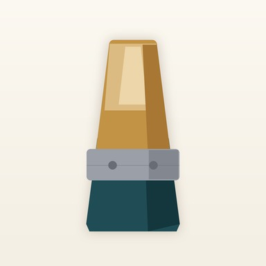

リード日和
当たりリードを育てて、
本番の一本を選ぼう。
新しいリードを吹きつぶす前に、少しずつ慣らす。今日はどれを吹くか、休ませた日数と最近の感触からおすすめが分かります。使用時間と評価だけなら15秒で記録完了。B♭クラリネット奏者のための、リード管理・慣らし記録アプリです。
iOS 18.0 以降 / iPhone 向け
当たりを育てる、6つの道具
-
箱ごと登録して、自動で採番
銘柄・硬さ・枚数を入れると #1 から番号が付く。実物にも同じ番号を書けば、画面の記録と手元の1枚がつながる。
-
少しずつ慣らす
14日／7日／ガイドなしから選べる慣らしプラン。今日は何分までかを毎日表示。目安を超えても記録は残せる。
-
今日の一本を選ぶ
休ませた日数と最近の評価から、今日にちょうどいい1本をおすすめ。理由も一緒に出る。
-
15秒で記録
使用時間と総合評価だけで保存。息の入り・反応・音色・用途は必要なときだけ。
-
本番の一本を、記録から決める
評価の推移を見て、本番候補を自分で選ぶ。アプリが勝手に決めることはない。
-
記録は端末の中だけ
アカウント不要。クラウド同期なし。リードの銘柄もメモも外に出ない。
無料で箱1つぶんのリードを登録できます。Pro にすると、箱・リードの登録数が無制限になり、外観の自動切り替え（ライト・ダーク）と JSON でのバックアップが使えます。詳しくはサポートをご覧ください。
記録は、あなたの端末の中に
箱の銘柄・硬さ・購入店・メモ、リードの番号・状態・用途・メモ、使用記録の時間・評価・メモは、すべて利用者の端末内にのみ保存されます。ほかの端末と同期されることはなく、アカウント登録も不要です。改善のための匿名の利用状況の計測は行いますが、記録の内容そのものは送りません。詳細はプライバシーポリシーをご覧ください。
今日の一本を、もう迷わない。
よくあるご質問はサポートに掲載しています。お問い合わせ: tempuraapps.support@gmail.com